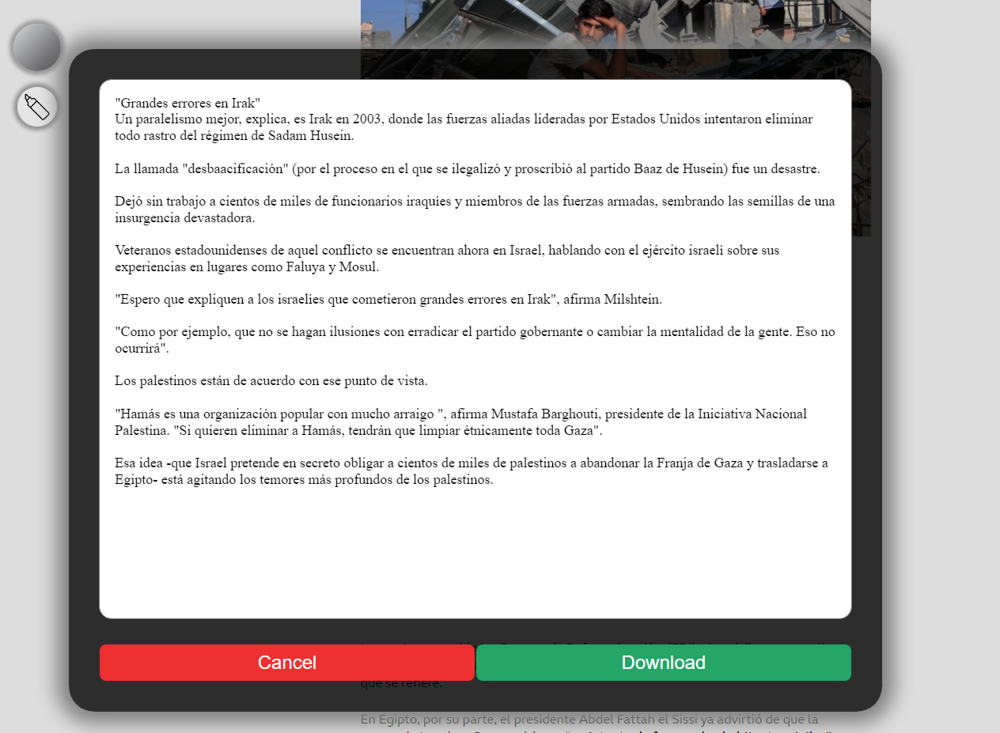

Resaltar texto en linea
Con "Highlighter & PDF" puedes generar resumenes en linea de una forma rapida y eficiente

Descargar tus notas
Con "Highlighter & PDF" puedes descargar facilmente todas tus notas en formato PDF
